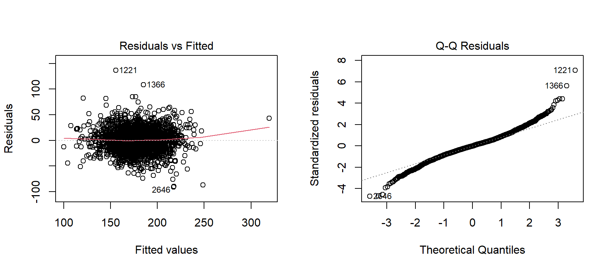
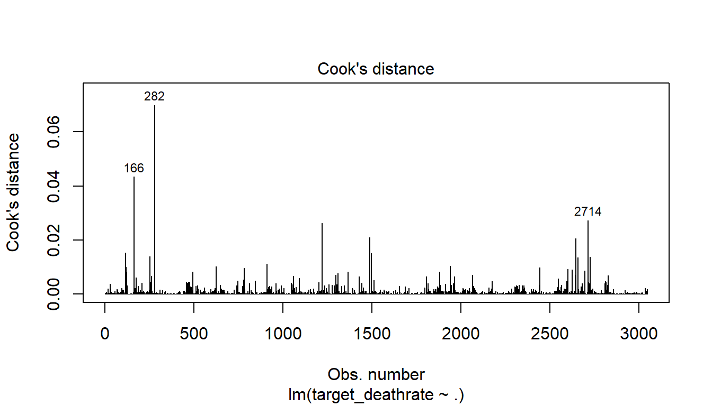

Capítulo 5 Regresión lineal múltiple
Hasta aquí se ha evaluado la asociación de cada variable socioeconómica con target_deathrate de forma individual. En esta sección se estudia su efecto conjunto mediante un modelo de regresión lineal múltiple (RLM), con target_deathrate como variable respuesta.
El modelo poblacional es
\[Y_i = \beta_0 + \beta_1 X_{1i} + \dots + \beta_k X_{ki} + \varepsilon_i, \qquad \varepsilon_i \overset{iid}{\sim} N(0, \sigma^2),\]
y se evalúa mediante el coeficiente de determinación \(R^2\), el \(R^2\) ajustado, el análisis de los residuos y los criterios de selección (AIC y BIC).
Las regresoras se escogieron con una búsqueda sobre todas las variables numéricas del conjunto de datos, bajo estas reglas: cada variable entra una sola vez; se permiten las transformaciones vistas en la regresión simple (logarítmica, raíz cuadrada, inversa, cuadrática y \(x^{0.25}\)); ninguna variable puede tener VIF mayor que 5; y se maximiza el \(R^2\) ajustado. Se excluyeron avgdeathsperyear, porque interviene en la construcción de la propia tasa de mortalidad, y pctsomecol18_24, porque tiene 2285 datos faltantes de 3047. Como las variables se eligieron a partir de los mismos datos, los valores \(p\) del modelo final son algo optimistas.
library(tidyverse)
library(car) # vif, outlierTest
library(moments) # skewness, kurtosis
library(lmtest) # bptest, dwtest, coeftest, coefci
library(sandwich) # vcovHC (errores estándar robustos)Se cargan los datos y se imputan los faltantes con la media, como en los capítulos anteriores. Este capítulo parte de los datos originales, de modo que no depende de los objetos creados antes.
datos_rlm <- read.csv("Data/cancer_reg.csv")
datos_rlm <- datos_rlm %>%
mutate(across(where(is.numeric), ~ ifelse(is.na(.), mean(., na.rm = TRUE), .)))
n <- nrow(datos_rlm)
n[1] 3047[1] 0La siguiente función aplica a cada variable la transformación indicada. Cuando una variable tiene ceros, el logaritmo se calcula como \(\ln(1 + x)\).
tf <- function(x, f) {
switch(f,
x = x,
log = if (all(x > 0)) log(x) else log1p(x),
sqrt = sqrt(x),
inv = 1 / x,
sq = x^2,
p25 = x^0.25)
}
crear <- function(especif) {
M <- sapply(especif, function(e) {
if (grepl("\\(", e)) {
f <- sub("\\(.*", "", e)
v <- sub(".*\\((.*)\\)", "\\1", e)
} else {
f <- "x"
v <- e
}
tf(datos_rlm[[v]], f)
})
colnames(M) <- gsub("\\)", "", gsub("\\(", "_", especif))
data.frame(target_deathrate = datos_rlm$target_deathrate, M)
}5.1 Modelo de 10 variables
m10 <- c("sqrt(incidencerate)", "p25(pctbachdeg25_over)", "sq(pctprivatecoverage)",
"log(pctotherrace)", "sqrt(pcths18_24)", "p25(pctblack)", "p25(birthrate)",
"log(pcths25_over)", "sq(medianagefemale)", "inv(medincome)")
dat10 <- crear(m10)
mod10 <- lm(target_deathrate ~ ., data = dat10)
summary(mod10)
Call:
lm(formula = target_deathrate ~ ., data = dat10)
Residuals:
Min 1Q Median 3Q Max
-91.09 -11.10 -0.22 10.47 136.93
Coefficients:
Estimate Std. Error t value Pr(>|t|)
(Intercept) 1.311e+01 1.767e+01 0.742 0.458
sqrt_incidencerate 8.551e+00 2.881e-01 29.681 < 2e-16 ***
p25_pctbachdeg25_over -2.558e+01 3.853e+00 -6.640 3.70e-11 ***
sq_pctprivatecoverage -3.431e-03 5.197e-04 -6.602 4.77e-11 ***
log_pctotherrace -5.275e+00 6.446e-01 -8.183 4.04e-16 ***
sqrt_pcths18_24 3.519e+00 5.263e-01 6.687 2.69e-11 ***
p25_pctblack 4.243e+00 6.186e-01 6.859 8.37e-12 ***
p25_birthrate -1.097e+01 2.472e+00 -4.437 9.45e-06 ***
log_pcths25_over 1.113e+01 2.765e+00 4.026 5.81e-05 ***
sq_medianagefemale -7.212e-03 9.261e-04 -7.788 9.30e-15 ***
inv_medincome 7.000e+05 1.330e+05 5.262 1.53e-07 ***
---
Signif. codes: 0 '***' 0.001 '**' 0.01 '*' 0.05 '.' 0.1 ' ' 1
Residual standard error: 19.39 on 3036 degrees of freedom
Multiple R-squared: 0.5136, Adjusted R-squared: 0.512
F-statistic: 320.6 on 10 and 3036 DF, p-value: < 2.2e-16Las diez variables son significativas (p < 0.001; el intercepto no lo es, p = 0.46), y el modelo es globalmente significativo (F = 320.6 con 10 y 3036 grados de libertad, p < 0.05): al menos un coeficiente es distinto de cero. La ecuación ajustada es
\[\widehat{\text{target\_deathrate}} = 13.11 + 8.55\sqrt{\text{incidencerate}} - 25.58\,\text{pctbachdeg25\_over}^{0.25} - 0.00343\,\text{pctprivatecoverage}^2 - 5.27\ln(1+\text{pctotherrace}) + 3.52\sqrt{\text{pcths18\_24}} + 4.24\,\text{pctblack}^{0.25} - 10.97\,\text{birthrate}^{0.25} + 11.13\ln(\text{pcths25\_over}) - 0.00721\,\text{medianagefemale}^2 + 700\,007\,\frac{1}{\text{medincome}}\]
La mortalidad aumenta con la incidencia de cáncer y disminuye con el nivel educativo universitario (pctbachdeg25_over), con la cobertura privada y con la tasa de natalidad. Como las variables están transformadas, cada coeficiente se interpreta sobre la variable transformada y condicionado a las demás; por ejemplo, pcths25_over y pcths18_24 tienen coeficiente positivo, pero comparten información con las demás variables de educación e ingreso.
5.2 \(R^2\) y \(R^2\) ajustado
s10 <- summary(mod10)
sse10 <- sum(residuals(mod10)^2)
p10 <- length(coef(mod10))
c(R2 = s10$r.squared,
R2_ajustado = s10$adj.r.squared,
Error_residual = s10$sigma,
AIC = n * log(sse10 / n) + 2 * p10,
BIC = n * log(sse10 / n) + p10 * log(n)) R2 R2_ajustado Error_residual AIC BIC
5.135794e-01 5.119772e-01 1.938682e+01 1.807721e+04 1.814346e+04 El modelo explica el 51.4 % de la variabilidad de target_deathrate (\(R^2\) = 0.5136; \(R^2\) ajustado = 0.5120). El error estándar residual es de 19.39 muertes por cada 100 000 habitantes. El restante 48.6 % de la variabilidad no es explicado por estas variables, así que el modelo describe una asociación pero no es adecuado para predecir con precisión la tasa de un condado en particular. (AIC y BIC se calculan como \(n\ln(SSE/n) + 2p\) y \(n\ln(SSE/n) + p\ln n\), la misma forma que usa step().)
5.3 Multicolinealidad
sqrt_incidencerate p25_pctbachdeg25_over sq_pctprivatecoverage log_pctotherrace sqrt_pcths18_24
1.126620 4.199392 3.898936 1.571708 1.402075
p25_pctblack p25_birthrate log_pcths25_over sq_medianagefemale inv_medincome
1.260288 1.052150 3.121808 1.361300 3.867743 [1] 4.199392Los VIF van de 1.05 a 4.20; el máximo corresponde a p25_pctbachdeg25_over (4.20), seguido de sq_pctprivatecoverage (3.90) y inv_medincome (3.87). Todos son inferiores a 5, por lo que no hay multicolinealidad problemática, aunque la educación universitaria, la cobertura privada y el ingreso comparten información.
5.4 Análisis de los errores
Se verifican los supuestos del modelo sobre los residuos: media cero, normalidad, varianza constante, independencia y presencia de observaciones atípicas o influyentes. En todas las pruebas, Ho indica que el supuesto se cumple.
par(mfrow = c(1, 2))
plot(mod10, which = 1) # residuos vs ajustados
plot(mod10, which = 2) # Q-Q normal
Media cero. Ho: E(error) = 0.
One Sample t-test
data: res
t = -2.2169e-15, df = 3046, p-value = 1
alternative hypothesis: true mean is not equal to 0
95 percent confidence interval:
-0.6875069 0.6875069
sample estimates:
mean of x
-7.773383e-16 No se rechaza Ho (p ≈ 1): la media de los errores es cero.
Normalidad. Ho: los errores siguen una distribución normal.
Shapiro-Wilk normality test
data: res
W = 0.97783, p-value < 2.2e-16asimetria curtosis
0.1560933 5.5243905 Se rechaza Ho (W = 0.978, p < 0.05). Los residuos son prácticamente simétricos (asimetría = 0.16), pero con colas más pesadas que la normal (curtosis = 5.52 > 3). Con n = 3047, la prueba detecta desviaciones pequeñas y el teorema del límite central hace que las pruebas t y F sigan siendo aproximadamente válidas.
Homocedasticidad. Ho: la varianza de los errores es constante.
studentized Breusch-Pagan test
data: mod10
BP = 111.88, df = 10, p-value < 2.2e-16Se rechaza Ho (BP = 111.9, gl = 10, p < 0.05): hay heterocedasticidad. Los errores estándar clásicos no son confiables, por lo que más adelante se emplean errores estándar robustos.
Independencia. Ho: no hay autocorrelación de primer orden en los errores.
Durbin-Watson test
data: mod10
DW = 1.7662, p-value = 4.067e-11
alternative hypothesis: true autocorrelation is greater than 0El estadístico de Durbin-Watson es 1.766 (< 2) y se rechaza Ho: hay una autocorrelación positiva leve entre residuos consecutivos. Hay que interpretarlo con cuidado, porque el orden de las filas del conjunto de datos no es temporal.
Observaciones atípicas e influyentes.

cook <- cooks.distance(mod10)
c(max_cook = max(cook), n_cook_mayor_4n = sum(cook > 4 / n), n_cook_mayor_1 = sum(cook > 1)) max_cook n_cook_mayor_4n n_cook_mayor_1
0.06982597 223.00000000 0.00000000 [1] 30 rstudent unadjusted p-value Bonferroni p
1221 7.141475 1.1507e-12 3.5063e-09
1366 5.651923 1.7337e-08 5.2825e-05
2646 -4.739059 2.2459e-06 6.8432e-03
2659 -4.681528 2.9723e-06 9.0566e-03
282 -4.571771 5.0295e-06 1.5325e-02
1497 4.422195 1.0113e-05 3.0816e-02
116 4.420486 1.0193e-05 3.1059e-02La distancia de Cook máxima es 0.070, muy inferior a 1: ninguna observación es realmente influyente (con el criterio \(4/n\) se marcan 223 observaciones, pero con n tan grande ese umbral es muy estricto). Solo 30 observaciones (1.0 %) tienen residuos studentizados mayores a 3 en valor absoluto. La prueba de Bonferroni (outlierTest) marca 7 de ellas como atípicas (filas 1221, 1366, 2646, 2659, 282, 1497 y 116, con p ajustado < 0.05), pero ninguna es influyente, de modo que se conservan en el modelo.
5.5 Errores estándar robustos
Dado el incumplimiento de la homocedasticidad, los contrastes de significancia individual se recalculan con errores estándar robustos (HC3).
t test of coefficients:
Estimate Std. Error t value Pr(>|t|)
(Intercept) 1.3106e+01 2.1525e+01 0.6089 0.542666
sqrt_incidencerate 8.5515e+00 4.4445e-01 19.2404 < 2.2e-16 ***
p25_pctbachdeg25_over -2.5585e+01 4.6336e+00 -5.5216 3.643e-08 ***
sq_pctprivatecoverage -3.4309e-03 5.9514e-04 -5.7648 8.996e-09 ***
log_pctotherrace -5.2747e+00 7.7100e-01 -6.8414 9.449e-12 ***
sqrt_pcths18_24 3.5194e+00 6.3957e-01 5.5027 4.051e-08 ***
p25_pctblack 4.2431e+00 7.7064e-01 5.5059 3.979e-08 ***
p25_birthrate -1.0969e+01 3.3802e+00 -3.2450 0.001187 **
log_pcths25_over 1.1133e+01 3.3864e+00 3.2876 0.001022 **
sq_medianagefemale -7.2120e-03 1.0335e-03 -6.9782 3.657e-12 ***
inv_medincome 7.0001e+05 1.5810e+05 4.4277 9.862e-06 ***
---
Signif. codes: 0 '***' 0.001 '**' 0.01 '*' 0.05 '.' 0.1 ' ' 1Con errores robustos, las diez variables siguen siendo significativas (|t| entre 3.2 y 19.2, todas con p < 0.01); los estadísticos t bajan respecto a los clásicos, pero las conclusiones no cambian. El intercepto no es significativo (p = 0.54), lo cual no afecta la interpretación del modelo.
2.5 % 97.5 %
(Intercept) -2.910007e+01 5.531184e+01
sqrt_incidencerate 7.680004e+00 9.422921e+00
p25_pctbachdeg25_over -3.466977e+01 -1.649932e+01
sq_pctprivatecoverage -4.597772e-03 -2.263942e-03
log_pctotherrace -6.786462e+00 -3.762979e+00
sqrt_pcths18_24 2.265339e+00 4.773409e+00
p25_pctblack 2.732042e+00 5.754092e+00
p25_birthrate -1.759640e+01 -4.340933e+00
log_pcths25_over 4.493194e+00 1.777279e+01
sq_medianagefemale -9.238465e-03 -5.185558e-03
inv_medincome 3.900156e+05 1.009998e+065.6 Selección del mejor modelo
Se comparan modelos de distinto tamaño obtenidos con la misma búsqueda (cada variable una sola vez, VIF < 5), según \(R^2\) ajustado, AIC y BIC.
m19 <- c("sqrt(avganncount)", "sqrt(incidencerate)", "inv(medincome)", "inv(popest2015)",
"sq(medianagemale)", "inv(percentmarried)", "sqrt(pcths18_24)", "p25(pctbachdeg18_24)",
"inv(pcths25_over)", "sqrt(pctbachdeg25_over)", "log(pctunemployed16_over)",
"inv(pctprivatecoveragealone)", "inv(pctpubliccoverage)", "sq(pctpubliccoveragealone)",
"p25(pctblack)", "log(pctasian)", "log(pctotherrace)", "sq(pctmarriedhouseholds)",
"sq(birthrate)")
m15 <- c("sqrt(pctbachdeg25_over)", "sqrt(incidencerate)", "log(pctotherrace)", "sqrt(pcths18_24)",
"sq(pctmarriedhouseholds)", "p25(birthrate)", "inv(pcths25_over)",
"sq(pctpubliccoveragealone)", "p25(pctblack)", "inv(percentmarried)", "inv(medincome)",
"log(pctunemployed16_over)", "inv(pctpubliccoverage)", "sq(medianagemale)",
"inv(popest2015)")
m9 <- c("sqrt(incidencerate)", "log(pctotherrace)", "sq(pctprivatecoverage)",
"sqrt(pctbachdeg25_over)", "sqrt(pcths18_24)", "p25(birthrate)", "p25(pctblack)",
"sq(medianagefemale)", "inv(medincome)")
m7 <- c("sqrt(incidencerate)", "sqrt(pctbachdeg25_over)", "log(pctotherrace)", "pcths18_24",
"sq(pctprivatecoverage)", "sq(pctempprivcoverage)", "p25(pctmarriedhouseholds)")
candidatos <- list("19 variables" = m19, "15 variables" = m15, "10 variables" = m10,
"9 variables" = m9, "7 variables" = m7)
comparar <- function(especif) {
m <- lm(target_deathrate ~ ., data = crear(especif))
p <- length(coef(m))
sse <- sum(residuals(m)^2)
data.frame(R2 = summary(m)$r.squared,
R2_ajustado = summary(m)$adj.r.squared,
AIC = n * log(sse / n) + 2 * p,
BIC = n * log(sse / n) + p * log(n),
VIF_max = max(vif(m)))
}
tabla <- do.call(rbind, lapply(candidatos, comparar))
tabla <- cbind(Modelo = names(candidatos), tabla)
rownames(tabla) <- NULL
tabla %>% mutate(across(where(is.numeric), ~ round(., 4))) Modelo R2 R2_ajustado AIC BIC VIF_max
1 19 variables 0.5252 0.5222 18021.39 18141.83 4.8450
2 15 variables 0.5231 0.5208 18026.81 18123.16 4.7321
3 10 variables 0.5136 0.5120 18077.21 18143.46 4.1994
4 9 variables 0.5114 0.5099 18088.88 18149.10 3.8538
5 7 variables 0.5044 0.5032 18128.45 18176.62 4.8587| Modelo | \(R^2\) ajustado | AIC | BIC | VIF máximo |
|---|---|---|---|---|
| 19 variables | 0.5222 | 18021.4 | 18141.8 | 4.85 |
| 15 variables | 0.5208 | 18026.8 | 18123.2 | 4.73 |
| 10 variables | 0.5120 | 18077.2 | 18143.5 | 4.20 |
| 9 variables | 0.5099 | 18088.9 | 18149.1 | 3.85 |
| 7 variables | 0.5032 | 18128.4 | 18176.6 | 4.86 |
El \(R^2\) ajustado y el AIC prefieren el modelo de 19 variables, y el BIC, que penaliza más la complejidad, prefiere el de 15. La mejora al pasar de 10 a 19 variables es de apenas 0.010 en \(R^2\) ajustado. Se verifica con selección hacia atrás si alguna de las diez variables del modelo puede retirarse:
lm(formula = target_deathrate ~ sqrt_incidencerate + p25_pctbachdeg25_over +
sq_pctprivatecoverage + log_pctotherrace + sqrt_pcths18_24 +
p25_pctblack + p25_birthrate + log_pcths25_over + sq_medianagefemale +
inv_medincome, data = dat10)lm(formula = target_deathrate ~ sqrt_incidencerate + p25_pctbachdeg25_over +
sq_pctprivatecoverage + log_pctotherrace + sqrt_pcths18_24 +
p25_pctblack + p25_birthrate + log_pcths25_over + sq_medianagefemale +
inv_medincome, data = dat10)En ambos criterios el procedimiento no elimina ninguna variable: quitar cualquiera aumenta el AIC y el BIC (el menor aumento corresponde a log_pcths25_over, con AIC de 18091.4 frente a 18077.2).
Modelo seleccionado. Se retiene el modelo de 10 variables, porque (i) pierde solo 0.010 de \(R^2\) ajustado frente al de 19 variables, con casi la mitad de variables, (ii) tiene un VIF máximo más holgado (4.20), y (iii) ninguna de sus variables puede retirarse según AIC y BIC. Si lo que se busca es la mejor relación entre ajuste y complejidad según el BIC, el de 15 variables es una alternativa válida.
5.7 Conclusión del capítulo
- Las variables seleccionadas explican en conjunto cerca de la mitad de la variabilidad de la tasa de mortalidad por cáncer (\(R^2\) ajustado = 0.512), y el modelo es globalmente significativo (p < 0.05).
- La mortalidad aumenta con la incidencia de cáncer, y disminuye con el nivel educativo universitario, la cobertura privada y la tasa de natalidad. Los coeficientes están sobre variables transformadas y deben leerse condicionados a las demás variables.
- No hay multicolinealidad problemática (VIF máximo = 4.20).
- Los residuos no cumplen normalidad, homocedasticidad ni independencia estrictas. Por el tamaño muestral (n = 3047) la inferencia sigue siendo aproximadamente válida, y con errores estándar robustos HC3 las diez variables siguen siendo significativas.
- No hay observaciones influyentes (distancia de Cook máxima = 0.070).
- Por su \(R^2\) moderado y la heterocedasticidad, el modelo sirve para describir la asociación conjunta de los factores con la mortalidad, y no para predecir la tasa de un condado individual.